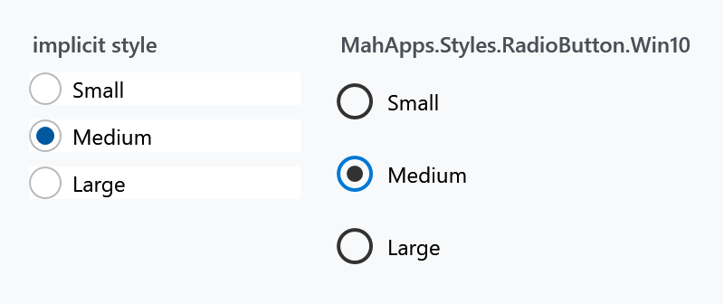
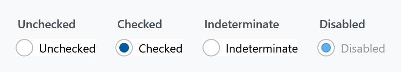
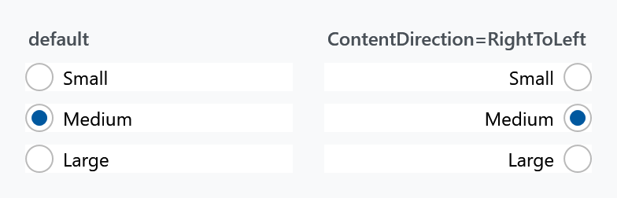
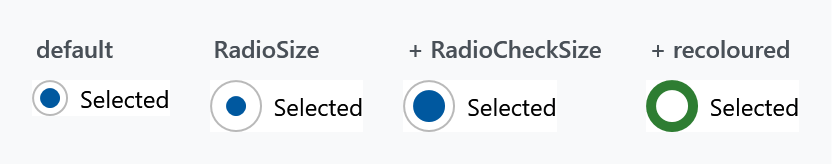

Every RadioButton in a MahApps application is styled without any markup on your side. As with the CheckBox there is one alternative style with the Windows 10 look, and the whole appearance is reachable through attached properties.

The implicit style
Styles/Controls.xaml applies MahApps.Styles.RadioButton to every RadioButton. Merging that dictionary — which the quick start does — is all it takes:
<ResourceDictionary Source="pack://application:,,,/MahApps.Metro;component/Styles/Controls.xaml" />
To extend rather than replace, base your own style on the keyed one:
<Style BasedOn="{StaticResource MahApps.Styles.RadioButton}" TargetType="{x:Type RadioButton}">
<Setter Property="mah:RadioButtonHelper.RadioSize" Value="22" />
</Style>
The two styles
| Style | |
|---|---|
MahApps.Styles.RadioButton |
the default: a thin ring with a filled dot when selected |
MahApps.Styles.RadioButton.Win10 |
the Windows 10 look: a heavier ring, and the ring turns accent-coloured when selected |
<RadioButton Style="{StaticResource MahApps.Styles.RadioButton.Win10}" Content="Medium" />
The Win10 style derives from the default one and, as with the check box, differs in more than colour:
| default | Win10 | |
|---|---|---|
RadioSize |
18 |
20 |
RadioCheckSize |
10 |
10 |
RadioStrokeThickness |
1 |
2 |
MinHeight |
— | 32 |
MinWidth |
— | 120 |
Padding |
6 0 0 0 |
8 0 0 0 |
MinWidth="120" applies here too. A Win10 radio button is at least 120 pixels wide however short its label, which spreads a horizontal row of them far apart. Set MinWidth="0" where that is not what you want.
The states

RadioButton inherits IsThreeState from ToggleButton, and the value does cycle through null — but the style draws the indeterminate state exactly like unchecked, so nobody can tell them apart. The CheckBox is the one control of the three whose style gives that state a mark of its own. A radio button is a pick-one control anyway, so there is rarely a reason to reach for three states here.
Grouping
Grouping is WPF's own and needs no MahApps involvement: radio buttons in the same container are mutually exclusive, and GroupName groups them across containers.
<StackPanel>
<RadioButton GroupName="Size" Content="Small" />
<RadioButton GroupName="Size" Content="Medium" IsChecked="True" />
<RadioButton GroupName="Size" Content="Large" />
</StackPanel>
Content on the other side
ToggleButtonHelper.ContentDirection moves the ring to the right of the label. The style's own trigger switches HorizontalContentAlignment to Right and flips the padding with it, so the spacing stays correct:

<RadioButton mah:ToggleButtonHelper.ContentDirection="RightToLeft" Content="Medium" />
This is not the control's own FlowDirection, which would mirror the text as well. See ToggleButtonHelper.
Changing the look
Everything visual comes from RadioButtonHelper — three properties for size and 36 brushes following one naming scheme:

<RadioButton mah:RadioButtonHelper.RadioSize="26"
mah:RadioButtonHelper.RadioCheckSize="16"
mah:RadioButtonHelper.OuterEllipseCheckedFill="#2E7D32"
mah:RadioButtonHelper.OuterEllipseCheckedStroke="#2E7D32"
mah:RadioButtonHelper.CheckGlyphFill="White"
mah:RadioButtonHelper.CheckGlyphStroke="White"
Content="Selected" />
RadioSize is the outer ring, RadioCheckSize the dot inside it — set the second close to the first and the dot fills the ring, as in the last panel above.
The brushes are named {Part}{Interaction}, where the interaction is nothing at all for the resting state, or PointerOver, Pressed or Disabled. Note that the ring has separate brushes for selected and unselected — OuterEllipseFill against OuterEllipseCheckedFill — while the dot has only one set, since it is not drawn at all when nothing is selected.
Both styles set 33 of the 36 brushes themselves; the three left out are the resting Foreground, Background and BorderBrush, which are the control's own properties and which both styles set directly instead. So an override always replaces a value the style already put there.
Watch the naming when you style a check box and a radio button to match: this helper says PointerOver where CheckBoxHelper says MouseOver. Same state, different word.
Related
CheckBox for the many-of-several counterpart, and ToggleButton for a button that stays pressed.